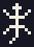
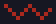

Ba nguyên tắc
Rút ra từ tư liệu về thổ cẩm Ê Đê (xem phần Nguồn tham khảo cuối trang).
Vẽ trên lưới dệt
Hoa văn thổ cẩm hình thành từ những sợi đan ngang dọc, nên mọi hình đều là bậc thang. Logo và hoạ tiết của Hriăm cũng vậy: không đường cong, không đường chéo trơn.
Nền chàm, điểm màu
Trang phục Ê Đê thường nền đen hoặc chàm, điểm đỏ, vàng, trắng. Hriăm giữ chàm và trắng làm nền, đỏ và vàng làm điểm nhấn, xanh chỉ điểm xuyết.
Hoa văn ở viền
Dải hoa văn chiếm khoảng một phần tư đến một phần ba mặt vải, chạy dài sát gấu váy, gấu áo. Trên trang, hoa văn nằm ở mép các khối, không phủ kín sau chữ.
Logo: chữ H dệt
Hai dải sọc đỏ viền trắng đứng song song như hai dải dệt, tạo thành chữ H của Hriăm. Ở giữa là quả trám, hoạ tiết hình thoi thường gặp trên váy Ê Đê. Hriăm trong tiếng Ê Đê nghĩa là học.

- Lưới 15 × 15 ô. Mỗi ô là một "mũi dệt"; giữ đúng lưới khi phóng to hay thu nhỏ.
- Hai dải dọc trắng – đỏ – trắng: hai nét của chữ H, cũng là dải sọc trên áo.
- Quả trám vàng – đỏ – trắng ở giữa: nét ngang của chữ H.
- Nền chàm đen bo góc 20%, giúp biểu tượng đứng được trên mọi nền.
- Khoảng trống quanh logo ít nhất bằng 1/4 cạnh biểu tượng.
Màu
Sáu màu lấy từ các màu chỉ được nhắc đến trong tư liệu: đen, chàm, đỏ, vàng, trắng và xanh. Thanh dưới cùng là tỉ lệ dùng gợi ý cho một trang.
Hoạ tiết
Năm hoạ tiết được vẽ lại theo lưới dệt, dựa trên những hình được tư liệu nhắc đến trên thổ cẩm Ê Đê. Đây là hình cách điệu mới, không chép một tấm vải hay một nghệ nhân cụ thể nào.


Dải hoa văn
Ghép các hoạ tiết thành dải lặp ngang, đặt ở mép các khối như đường viền trên vải.
Chữ
Cả hai phông hiển thị đủ chữ Ê Đê: ƀ, č, ñ, ĭ, ŏ, ŭ và các chữ có dấu chồng như ê̆, ô̆, ơ̆, ư̆.
Nét thanh đậm rõ, dùng cỡ lớn, độ đậm 500–600.
Dễ đọc ở cỡ nhỏ, độ đậm 400–700.
Nên và không nên
Nên
- Giữ phần lớn diện tích là chàm đen hoặc nền sáng; đỏ, vàng chỉ làm điểm nhấn.
- Đặt dải hoa văn ở mép khối, như viền gấu váy.
- Viết đúng dấu: Hriăm, Ê Đê.
- Hỏi ý kiến người Ê Đê hoặc nghệ nhân dệt trước khi dùng nhận diện chính thức.
Không nên
- Kéo méo, xoay, đổi màu hay làm mờ logo.
- Phủ hoa văn kín phía sau chữ cần đọc.
- Gán ý nghĩa thiêng liêng, nghi lễ cho hoạ tiết khi chưa có nguồn xác nhận.
- Mô phỏng hoa văn Kteh (dệt kèm hạt cườm), vốn gắn với lễ phục và gia đình quyền quý.
Nguồn tham khảo
- Nghệ thuật trang trí trên thổ cẩm của người Ê Đê, Nhân Dân, 2025: dải hoa văn chiếm 1/4 đến 1/3 mặt vải, hoạ tiết chuồn chuồn, rùa, thằn lằn, kỹ thuật Kteh.
- Brocade art of the Ede ethnic minority, VietNamNet, 2021: màu đen, đỏ, vàng, trắng; hoạ tiết rồng, quả trám, cành trúc, rùa.
- Traditional attire of the Ede, Vietnam Pictorial, 2025: áo váy nền đen hoặc chàm, dải hoa văn đỏ, trắng, vàng, xanh ở cổ, vai, gấu; sọc ngang giữa thân áo nam.